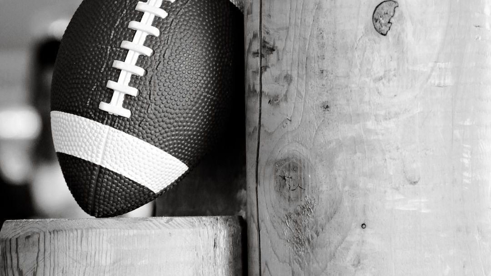

BIG8
試合結果・日程・順位表を毎日更新。チーム10・全20試合。
最新の試合結果
| 日付 | 対戦 | スコア |
|---|---|---|
| 8月30日（日） | 駒澤大学 vs 専修大学 | 12 - 27 |
今後の試合
| 日付 | 対戦 | スコア | 会場 |
|---|---|---|---|
| 9月5日（土） | 青山学院大学 vs 一橋大学 | — | アミノバイタルフィールド |
| 9月6日（日） | 桜美林大学 vs 日本大学 | — | アミノバイタルフィールド |
| 9月6日（日） | 国士舘大学 vs 東海大学 | — | 駒沢第二球技場 |
| 9月19日（土） | 東海大学 vs 日本大学 | — | アミノバイタルフィールド |
| 9月19日（土） | 国士舘大学 vs 明治学院大学 | — | アミノバイタルフィールド |
| 9月20日（日） | 専修大学 vs 一橋大学 | — | アミノバイタルフィールド |
| 9月20日（日） | 駒澤大学 vs 横浜国立大学 | — | アミノバイタルフィールド |
| 10月3日（土） | 横浜国立大学 vs 一橋大学 | — | アミノバイタルフィールド |